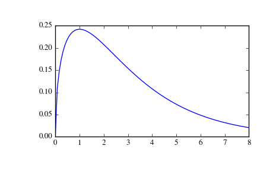

scipy.stats.wishart¶
- scipy.stats.wishart = <scipy.stats._multivariate.wishart_gen object at 0x7fa40e156110>[source]¶
A Wishart random variable.
The df keyword specifies the degrees of freedom. The scale keyword specifies the scale matrix, which must be symmetric and positive definite. In this context, the scale matrix is often interpreted in terms of a multivariate normal precision matrix (the inverse of the covariance matrix).
Parameters: x : array_like
Quantiles, with the last axis of x denoting the components.
df : int
Degrees of freedom, must be greater than or equal to dimension of the scale matrix
scale : array_like
Symmetric positive definite scale matrix of the distribution
random_state : None or int or np.random.RandomState instance, optional
If int or RandomState, use it for drawing the random variates. If None (or np.random), the global np.random state is used. Default is None.
Alternatively, the object may be called (as a function) to fix the degrees
of freedom and scale parameters, returning a “frozen” Wishart random
variable:
rv = wishart(df=1, scale=1)
- Frozen object with the same methods but holding the given degrees of freedom and scale fixed.
See also
Notes
The scale matrix scale must be a symmetric positive definite matrix. Singular matrices, including the symmetric positive semi-definite case, are not supported.
The Wishart distribution is often denoted
\[W_p(\nu, \Sigma)\]where \(\nu\) is the degrees of freedom and \(\Sigma\) is the \(p \times p\) scale matrix.
The probability density function for wishart has support over positive definite matrices \(S\); if \(S \sim W_p(\nu, \Sigma)\), then its PDF is given by:
\[f(S) = \frac{|S|^{\frac{\nu - p - 1}{2}}}{2^{ \frac{\nu p}{2} } |\Sigma|^\frac{\nu}{2} \Gamma_p \left ( \frac{\nu}{2} \right )} \exp\left( -tr(\Sigma^{-1} S) / 2 \right)\]If \(S \sim W_p(\nu, \Sigma)\) (Wishart) then \(S^{-1} \sim W_p^{-1}(\nu, \Sigma^{-1})\) (inverse Wishart).
If the scale matrix is 1-dimensional and equal to one, then the Wishart distribution \(W_1(\nu, 1)\) collapses to the \(\chi^2(\nu)\) distribution.
New in version 0.16.0.
References
[R374] M.L. Eaton, “Multivariate Statistics: A Vector Space Approach”, Wiley, 1983. [R375] W.B. Smith and R.R. Hocking, “Algorithm AS 53: Wishart Variate Generator”, Applied Statistics, vol. 21, pp. 341-345, 1972. Examples
>>> import matplotlib.pyplot as plt >>> from scipy.stats import wishart, chi2 >>> x = np.linspace(1e-5, 8, 100) >>> w = wishart.pdf(x, df=3, scale=1); w[:5] array([ 0.00126156, 0.10892176, 0.14793434, 0.17400548, 0.1929669 ]) >>> c = chi2.pdf(x, 3); c[:5] array([ 0.00126156, 0.10892176, 0.14793434, 0.17400548, 0.1929669 ]) >>> plt.plot(x, w)
The input quantiles can be any shape of array, as long as the last axis labels the components.
Methods
pdf(x, df, scale) Probability density function. logpdf(x, df, scale) Log of the probability density function. rvs(df, scale, size=1, random_state=None) Draw random samples from a Wishart distribution. entropy() Compute the differential entropy of the Wishart distribution.